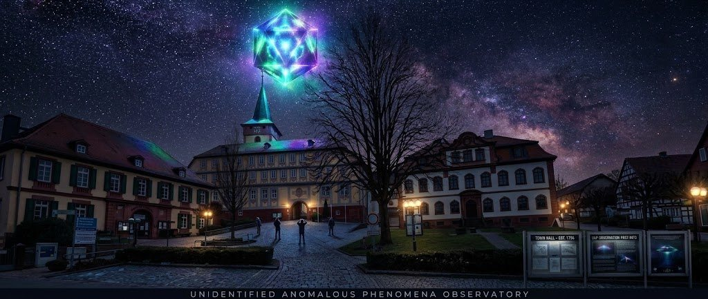

Zwischen Brensbach und Reichelsheim soll vor jedem Krieg ein unsichtbares Heer durch die Luft ziehen: Pferdegetrappel, Wagenknarren, Trompeten, Befehlsrufe. Das Besondere: Die Grafschaft Erbach hat die Zeugen ab 1742 amtlich verhört und alles zu Protokoll genommen. Eine Art „Akte X“ des 18. Jahrhunderts, nur 15 km von Bad König entfernt.
So beschreiben es die Überlieferungen: vom Schnellerts bei Ober-Kainsbach durch einen bestimmten Bauernhof, das Gersprenztal entlang durch Brensbach und Fränkisch-Crumbach hinauf zur Burg Rodenstein. Vor einem Krieg zieht das Heer lärmend hin, kommt der Frieden, kehrt es still zurück. Klick auf die Orte.
Ein Ritter von Rodenstein liebt Krieg und Jagd mehr als alles andere. Als seine Frau hochschwanger ist, bittet sie ihn zu bleiben. Er reitet trotzdem zum Kampf auf die sechs Kilometer entfernte Schnellertsburg. Die Frau stirbt mit dem Kind bei der Geburt und erscheint ihm nachts als Geist. Ihr Fluch: Er soll ruhelos als Bote von Krieg und Frieden durchs Land ziehen. Der Ritter fällt und wird auf dem Schnellerts begraben.
Seitdem zieht er vor jedem Krieg mit seinem Gefolge in der Morgendämmerung vom Schnellerts zum Rodenstein, „als ob er sich in Sicherheit bringen wolle“. Man hört Wagen knarren, Pferde, Trompeten und „Ho! Ho!“-Rufe, selbst einzelne Befehle. Sehen kann man nichts. Steht der Frieden bevor, kehrt er leise zurück. Sein Pferd soll er bei einem Schmied in Fränkisch-Crumbach beschlagen haben lassen.
Historisch gemeint ist meist Hans III. zu Rodenstein (1418–1500), ein unruhiger Ritter, der erst mit 52 heiratete, später fromm wurde, 1485 den Chor der Kirche in Fränkisch-Crumbach stiftete und 1500 auf einer Wallfahrt in Rom starb, wo er begraben ist. Ausgerechnet er, eigentlich ziemlich ungerecht. Vielleicht ist er in der Überlieferung mit Fritz von Rodenstein, „dem Tollen“, verschmolzen, der sich 1529 im Türkenkrieg hervortat. Die Rodensteiner starben im Mannesstamm 1671 aus. Burg Rodenstein und Burg Schnellerts haben historisch nichts miteinander zu tun.
Quellen: Wikipedia: Rodensteiner, Bechstein: Deutsches Sagenbuch, Brüder Grimm: Rodensteins Auszug, burgerbe.de
Im zweiten Viertel des 18. Jahrhunderts häuften sich die Berichte so sehr, dass die Behörden der Grafschaft Erbach 1742 eine Untersuchung anordneten. Im gräflich-erbachischen Amt Reichenberg (Reichelsheim) wurden zahlreiche Menschen verhört, die den Spuk „mit eigenen Ohren“ gehört haben wollten.
Zeuge: Simon Daum, Bauer zu Ober-Kainsbach
Vernommen durch: Amtmann Georg Philipp Wittich
Aussage (sinngemäß): Er habe die wilde Jagd des Schnellertsgeistes oft über seinen Hof ziehen hören, und zwar immer in Zeiten, in denen ein Krieg drohte.
Nachempfundene Darstellung, keine Abschrift des Originals
Der Blog burgerbe.de zieht den Vergleich: Das Verhalten der Behörden erinnere an die auch behördliche Ufo-Hysterie der frühen 1950er-Jahre.
Gemeldete Auszüge des Geisterheeres und die Kriege, die sie angekündigt haben sollen. Ein Punkt steht für einen überlieferten Hörbericht bzw. eine Meldephase, nicht für eine Zahl von Zeugen.
Daten: Wikipedia, burgerbe.de, Brüder Grimm; Hörberichte 1973, 1990 und 1991 laut Leserzuschrift von Thomas Steinmetz (Forschungsgemeinschaft Schnellerts) auf stoersignale.stoer.de. Zuordnung zu Kriegen nach der Deutung der Überlieferung.
| Erklärung | Worum es geht | Einschätzung |
|---|---|---|
| Akustik im Tal | Im engen Gersprenztal können Wind, Echos und Temperaturinversionen ferne Geräusche (Fuhrwerke, Truppenbewegungen, Jagden, Gewitter) weit tragen und verfremden. Die Wikipedia nennt ein „unerklärliches akustisches Phänomen“ als möglichen Ursprung. | naheliegend |
| Zugvögel | Nachts ziehende Gänse- oder Kranichschwärme rufen laut und unsichtbar über das Tal. Das gilt allgemein als häufige Wurzel von „Wilde Jagd“-Sagen. | plausibel |
| Kriegsangst | Wer in unruhigen Zeiten lebt, deutet Geräusche als Vorzeichen. Hinterher passt fast jeder Auszug zu irgendeinem Krieg. | sehr wahrscheinlich beteiligt |
| Einstürzende Höhlen, „Elektrizität“ | Erklärungsversuche aus dem 18. Jahrhundert. | historisch interessant |
| Alter Mythos | Das wilde Heer Wotans (Wilde Jagd) ist in ganz Mitteleuropa verbreitet. Am Rodenstein bekam es einen Namen und einen Ort. | gut belegt |
Spannend für uns: Schall trägt bei einer Inversion (kalte Luft im Tal, wärmere darüber) besonders weit, typisch in klaren, windstillen Herbst- und Winternächten. Genau solche Nächte gibt es im Odenwald häufig. Wer selbst einmal lauschen will, schaut auf der Wetterseite nach einer kalten, windstillen Nacht.
Granitblöcke rund 750 m südwestlich der Burg Rodenstein. Hier sollen einst zwei „wilde Weibchen“ in einer Felsöffnung gelebt haben.
Hier wurde 1673 Johann Konrad Dippel geboren, Alchemist, Arzt und Theologe. Er behauptete, ein Elixier gefunden zu haben, das ihn bis 135 Jahre alt werden lasse, und soll Leichen ausgegraben haben. Ob er Mary Shelley zu „Frankenstein“ inspirierte, ist nicht belegt.
Im Nibelungenlied wird Siegfried bei einer Jagd im Odenwald an einer Quelle von Hagen erstochen. Gut zehn Brunnen beanspruchen den Tatort, bekannt ist der bei Grasellenbach.
Die Sage erzählt von zwei Riesen, die sich mit Felsen bewarfen, bis einer unter den Blöcken begraben war. Die Geologie sagt: Wollsackverwitterung von Quarzdiorit.
Die „Drachenstadt“ mit dem Deutschen Drachenmuseum und Drachenskulpturen im Ort. Startpunkt der zweiten Etappe des Nibelungensteigs.
Ob der Name „Odenwald“ von Odin/Wotan stammt, ist umstritten. Schon früh brachte man die Rodensteiner Sage mit dem Wotanskult und der Wilden Jagd in Verbindung.
Heute heißen die Erscheinungen am Himmel anders. Deutschlands bekannteste UFO-Meldestelle sitzt mitten im Odenwald: CENAP in Lützelbach, gegründet 1976 in Mannheim von Hansjürgen Köhler und Werner Walter, seit 2013 im Odenwald.
Wirklich unbekannt war 2025 keines der gemeldeten Objekte: meist Starlink-Satelliten, die Venus oder Drohnen. Ungeklärte Fälle bleiben laut Köhler offen, weil wichtige Informationen fehlen, nicht weil Außerirdische dahinterstecken. Die Hotline ist rund um die Uhr erreichbar: 0151 18736259.
Quellen: hessenschau, euronews. Mehr dazu im Thema CENAP-Meldestelle.
Rundtour ab Rathaus Reichelsheim über Wildweibchenstein und Ruine Rodenstein, 8,7 km, etwa 2:20 h.
Ab Fränkisch-Crumbach über Rimdidim, Fallbach-Wasserfall und Wildweibchenstein, gut 16 km, rund 4 h. Startort ist das Dorf des Schmieds aus der Sage.
Rundweg ab Böllstein über die Ruine, knapp 7 km, etwa 2 h. Funde im Schnellerts-Museum Brensbach (Höchster Straße 3).
Landgasthof in einem Fachwerkbau aus dem 16. Jahrhundert direkt unter der Ruine, von dort 5 Minuten zu Fuß.
Unidentified Anomalous Phenomena Observatory · ein Projekt der Wetterstation Bad König · Stand 31. Oktober 2026 · Alle Angaben ohne Gewähr · Impressum · Datenschutz